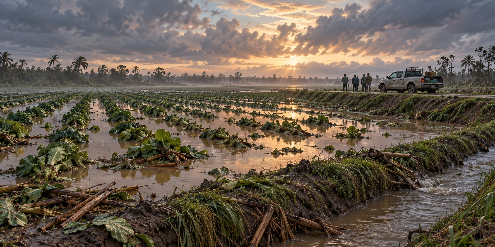

Farming After the Flood
The Slow, Bureaucratic, Chemical Work of Rebuilding a Farm the Water Already Drowned

After the 2024 hurricanes, Farm Recovery Centers brought public agencies together to help Florida producers navigate disaster assistance. Repairing a farm involves more than replacing damaged equipment. A farmer must establish which losses are covered, preserve records and contact the right office while ordinary operations remain disrupted.
The Clock Starts Immediately
Different crop-insurance policies and assistance programs have different reporting requirements. Producers should contact their insurance agent and local USDA Service Center promptly and check the current requirements for each program. One deadline cannot safely stand in for every crop, loss and disaster.
Dated photographs, inventories and records of expenses can help document damage. Keeping copies where a flood or damaged building will not destroy them is useful preparation. After a storm, records must distinguish damaged crops, equipment and infrastructure so that a claim describes what actually happened.
What Floodwater Does to Soil
Flooding can deprive roots of oxygen, move nutrients and bring contaminants onto farmland. Coastal surge can introduce salt. The effect varies with soil type, flood duration, crop and water source, so a flooded field does not automatically require the same treatment as its neighbor.
Soil testing and local extension advice should guide amendments and replanting. Lime is appropriate only when testing supports correcting acidity; adding sand or choosing a different crop is not a universal flood remedy. FDA guidance also distinguishes crop survival from food safety: when floodwater contacts the edible portion, the crop is considered adulterated and should not enter the human food supply.
The Mistake Guides Warn About
Restoring damaged drainage can be important, but cleanup must account for debris, contaminated water and safe access. Water management belongs alongside damage assessment, rather than waiting until every visible structure has been repaired.
A Day in Madison County
Farm Recovery Centers help connect producers with federal, state and local programs. The value of a shared location is practical: a farmer can ask about several kinds of loss without having to work out the entire administrative system alone. The centers do not make every producer eligible for every program.
What the Money Looked Like
In July 2025, USDA announced a $675.9 million disaster-assistance block grant agreement for Florida. The announcement covered specified agricultural recovery needs; it was not a payment guaranteed to each affected farm. Eligibility, applications and the losses covered are defined by the program’s rules.
Recovery Is a Process, Not a Day
Farming after a flood involves several timelines: immediate reporting and documentation, assessment of soil and food safety, repairs and later assistance decisions. Recovery continues after the water recedes because the next planting or harvest depends on both physical conditions and the resources available to the farm.
Quick Facts
| Floodwater and soil | Effects vary; testing should guide amendments and replanting |
|---|---|
| Common mistake | Delaying drainage restoration |
| Farm Recovery Centers | Connect producers with public agencies and assistance programs |
| 2025 federal grant | $675.9 million Florida block grant announced July 2025 |
Did You Know?
A crop can survive a flood and still be unsafe to sell for food.
Vocabulary
Notice of loss: the formal report a farmer files to start a crop insurance claim.
Salinity: the amount of salt in soil or water.
Block grant: a lump-sum federal payment to a state to distribute under set purposes.
Discussion Questions
1. Why might a farmer’s paperwork matter as much as the soil work after a hurricane?
2. What problem do Farm Recovery Centers solve that new money alone would not?
Related Articles
FLH-0012 — Hurricane Ian (2022)
FLH-0024 — The Day the Wind Took the Barn
FLH-0037 — The Storms That Changed the Everglades Agricultural Area
FLH-0039 — Recovering a Ranch After a Hurricane
Sources
Farmers.gov. “Hurricane Preparation and Recovery Resources” and “Flood and Excessive Moisture.” farmers.gov
FEMA. “How Farm Recovery Centers Cultivated the Disaster Assistance Process for Floridians.” fema.gov
USDA Climate Hubs. “Hurricane Preparation and Recovery Guides for Florida Producers.” climatehubs.usda.gov
USDA. “Secretary Rollins Announces $675.9 Million in Disaster Assistance for Farmers in Florida.” usda.gov
FDA — Evaluating flood-affected food crops
USDA — July 2025 Florida block grant announcement